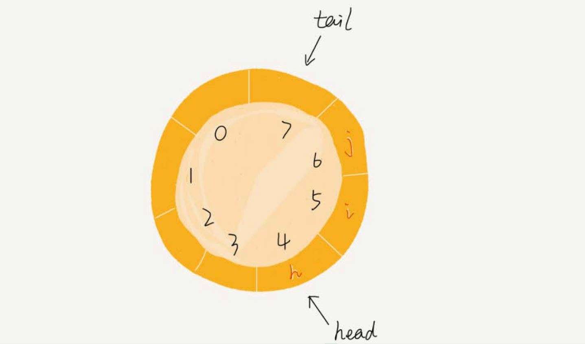
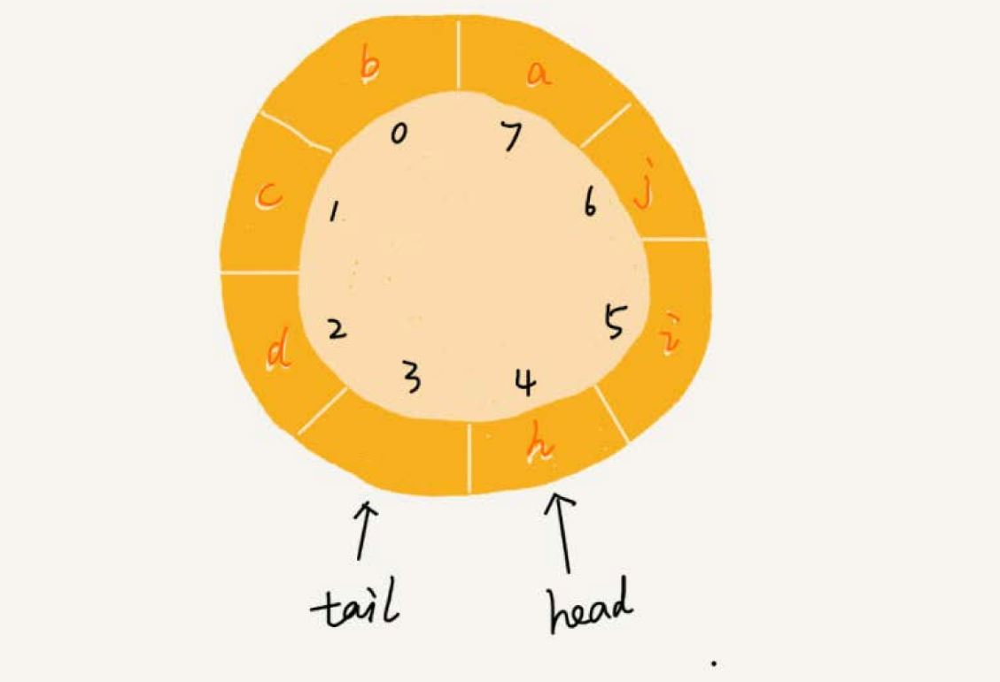

队列 #
队列，先进先出，像排队买票一样。队列和栈很像，也是一种操作受限的线性表数据结构，有两个基本操作：
- 入队（enqueue），放一个数据到队列尾部。
- 出队（dequeue），从队列头部取一个元素。
顺序队列和链式队列 #
顺序队列 #
跟栈一样，队列可以用数组来实现，也可以用链表来实现。用数组实现的队列叫作顺序队列，用链表实现的队列叫作链式队列。
type ArrayQueue struct {
items []string
n int // 数组 size
head int // 队列头下标
tail int // 队列尾下标
}
func (a *ArrayQueue) NewArrayQueue(capacity int) {
a.items = []string{}
a.n = capacity
a.head = 0
a.tail = 0
}
// 入队
func (a *ArrayQueue) Enqueue(item string) bool {
if a.tail == a.n { // 队列已满
return false
}
a.items[a.tail] = item
a.tail ++
return true
}
// 出队
func (a *ArrayQueue) Dequeue() string {
if a.head == a.tail { // 队列为空
return ""
}
item := a.items[a.head]
a.head ++
return item
}
上面的实现比栈的数组实现稍微复杂，栈只需要一个栈顶指针，但是队列需要一个 head 指针和一个 tail 指针，分别指向队列的头和尾。
随着不停地进行入队、出队操作，head 和 tail 都会持续往后移动。当 tail 移动到最右边，即使数组中还有空闲空间，也无法继续往队列中
添加数据了。这个问题如何解决？
在栈的数组实现中，通过数据搬移，但是，对于队列来说每次进行出队操作都相当于删除数组下标为 0 的数据，要搬移整个队列中的数据，这样出
队操作的时间复杂度就会从原来的 O(1) 变为 O(n)。
在出队时可以不用搬移数据。如果没有空闲空间了，只需要在入队时，再集中触发一次数据的搬移操作。修改 Enqueue 函数：
func (a *ArrayQueue) Enqueue(item string) bool {
if a.tail == a.n { // 队列已满
if a.head == 0 { // 没有空闲空间
return false
}
// 队列已满 但是有空闲空间 进行数据搬移
for i := a.head; i < a.tail; i ++ { // 从 head 指向的头部数据开始搬移
a.items[i - a.head] = a.items[i]
}
// 数据搬移后 更新 head tail
a.tail -= a.head
a.head = 0
}
a.items[a.tail] = item
a.tail ++
return true
}
链式队列 #
基于链表实现，同样需要两个指针：head 指针和 tail 指针。它们分别指向链表的第一个结点和最后一个结点。如图所示，
入队时，tail->next= new_node, tail =tail->next；出队时，head = head->next。
type LinkedListQueue struct {
head *ListNode
tail *ListNode
Length int
}
type ListNode struct {
data interface{}
next *ListNode
}
func NewLinkedListQueue() *LinkedListQueue {
return &LinkedListQueue{nil, nil, 0}
}
// 入队
func (l *LinkedListQueue) Enqueue(item interface{}) {
node := &ListNode{item, nil}
if nil == l.tail { // 空队列
l.tail = node
l.head = node
} else {
l.tail.next = node
l.tail = node
}
l.Length ++
}
// 出队
func (l *LinkedListQueue) Dequeue() interface{} {
if l.head == nil { // 队列为空
l.tail = nil // clean
return nil
}
item := l.head.data
l.head = l.head.next
l.Length --
return item
}
循环队列 #
用数组实现的队列，会有数据搬移，影响性能。如何避免？使用循环队列。
循环队列，顾名思义，它长得像一个环。原本数组是有头有尾的，是一条直线。把首尾相连，变成了一个环。

图中这个队列的大小为 8，当前 head=4，tail=7。当有一个新的元素 a 入队时，我们放入下标为 7 的位置。但这个时候，我们并不把 tail
更新为 8，而是将其在环中后移一位，到下标为 0 的位置。当再有一个元素 b 入队时，我们将 b 放入下标为 0 的位置，然后 tail 加 1 更新为 1。
这样就避免了数据搬移操作。
在用数组实现的非循环队列中，队满的判断条件是 tail == n，队空的判断条件是 head == tail。那针对循环队列，如何判断队空和队满？
队列为空的判断条件仍然是 head == tail。但队列满的判断条件就稍微有点复杂了。

图中队满的情况，tail=3，head=4，n=8，总结一下规律就是：(3+1)%8=4。尝试多种队满的情况，得出结论，当队满时，(tail+1)%n=head。
当队列满时，图中的 tail 指向的位置实际上是没有存储数据的。所以，循环队列会浪费一个数组的存储空间。